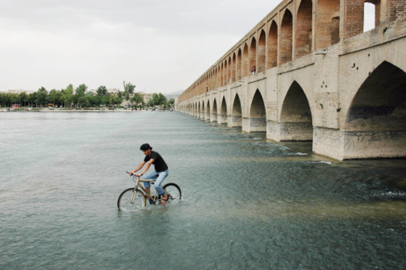

5 GÖZYAŞI
İRAN, 19 TEMMUZ
İznik ve Berlin’den sonra “Ben işte burada yaşarım ve hayattan da başka bir şey istemem” dediğim üçüncü kent İsfahan. Tarih öğretmeni olmamdan dolayı çok iyi bildiğim İsfahan, Buhara ve Semerkant gibi İpek Yolu şehirlerinden biri olduğu için tarih boyunca önemini korumuş. Nedense en çok yakınlık duyduğum Türk devleti olan Büyük Selçukluların çok önemli eserlerinin bulunduğu İsfahan, daha havasını ilk kokladığımda çarptı beni. Küçük pınarlar akan sokakları, Zagros Dağları’ndan doğan ve üzerinde onlarca köprünün bulunduğu, denize ulaşamadan çölde yitip giden Zayende Nehri, müzeleri, İmam Meydanı, kapalı çarşısı, yemyeşil parkları, gülümseyen insanlarıyla büyüleyici bir şehir burası.
Cehel Sütun Sarayı’na girdiğimizde ise hissettiğim yoğunluk ve gördüğüm güzellik karşısında tek yapabildiğim ağlamak.
Ruhunu Mephisto’ya satan Faust’un, son sözleri gibi, “Çok güzel!” diyebiliyorum sadece. Ben de ruhumun yarısını bu güzellik karşısında İsfahan’a armağan ediyorum. Ne güzel demiş şair: “Esfahan nefs-i cihan.” İsfahan dünyanın yarısıdır. Ruhumun yarısını bıraktığım İsfahan bu sıfatı fazlasıyla hak ediyor.

İran, İsfahan
“Bisiklet üzerinde bir yetişkin gördüğüm zaman, insan ırkının
geleceği için umutsuzluğa kapılmıyorum.” Sir Arthur Conan Doyle.